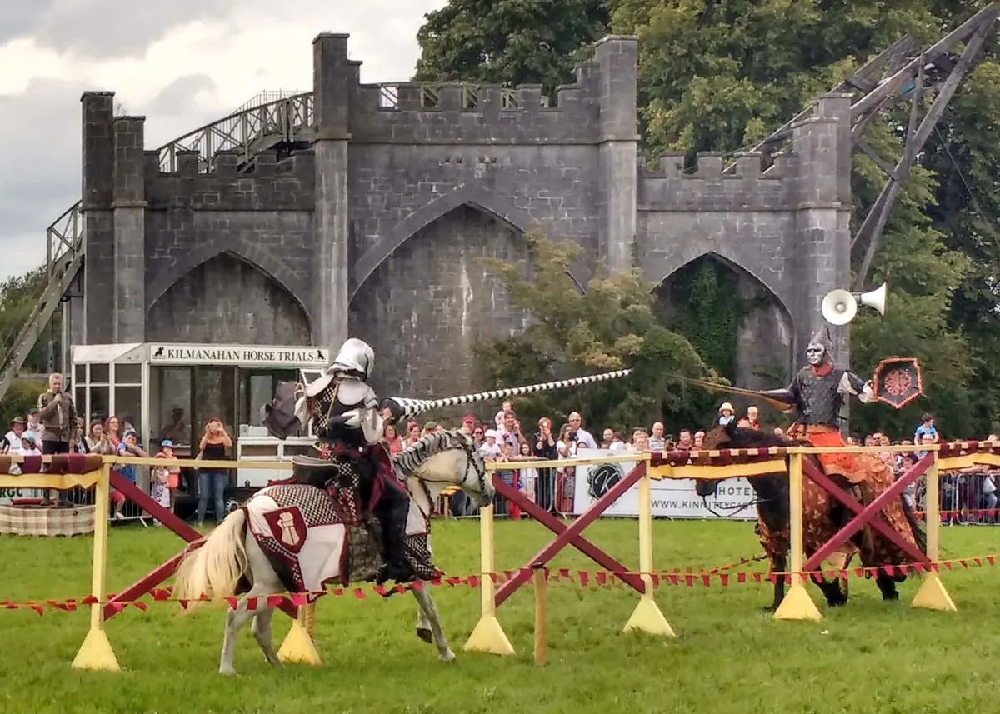
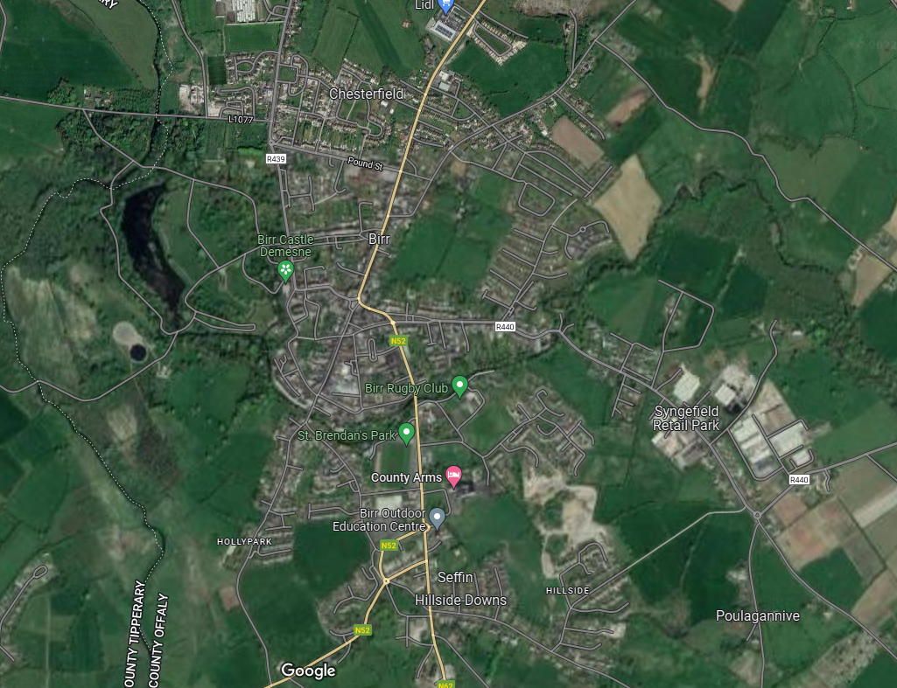

Where to eat

Travel back in time with a visit to the heritage town of Birr in County Offaly. Admire the beautiful architecture of Birr Castle Demesne, wander through the gorgeous gardens and stop by the adjoining science centre to view the historic Great Telescope. Catch a show at Birr Theatre, trek across the rolling countryside on a guided horseback tour and see the Seffin Stone at the gates of St John's Hall, it's said to mark the centre of Ireland.
Activities

Birr is the principal market town of South Offaly and also serves parts of north east Tipperary. The main street is lined with a wide variety of shops to cater for all needs. Within the town there are a number of educational facilities including three primary schools: St Brendan's Boys school, Mercy Primary School and the Model Primary School (Church of Ireland). There is one secondary school, St. Brendan's Community School. Hotels include the County Arms and Dooly's Hotel. The newspaper The Midland Tribune, covering South Offaly and North Tipperary, has its office in the town.
Historic Amenities

Birr is a designated Irish Heritage Town due to the preservation and wealth of Georgian architecture in the town. The earliest Georgian style buildings dating from 1740s are located in Emmet Square and Emmet street (then known as Cumberland Square and Cumberland Street). The column in the centre of the square dates from 1747 and was built to carry the statue of the Duke of Cumberland, known as the Bloody Duke and the victor of the Battle of Culloden. The statue was removed in 1915 as it was in danger of collapse. The Oxmantown Mall was laid out in the early 19th century and was designed as a promenade leading from Birr Castle gates to the Church of Ireland.
Places nearby

The town is situated near the meeting of the Camcor and Little Brosna rivers, the latter flowing on into the River Shannon near Victoria Lock. The Ormond Flying Club has been in operation at Birr Airfield for over 30 years. The area has been linked with aviation for some time - as a British Army airstrip was previously near the current field.Birr lies on the N52 and N62 national secondary roads. The routes are combined as they pass through Birr.
Accommodation

There are many optionsto choice for travellers visiting Birr, offering a family-friendly environment alongside many helpful amenities designed to enhance your stay. You'll enjoy relaxing rooms that offer a desk and a seating area, and you can stay connected during your stay as The Maltings offers guests free wifi. The hotel features room service, baggage storage, and a sun terrace. Plus, The Maltings offers free breakfast, providing a pleasant respite from your busy day. For guests with a vehicle, free parking is available. If you're looking for an Italian restaurant, consider a visit to Romayo's Diner Birr, which is not far from The Maltings.